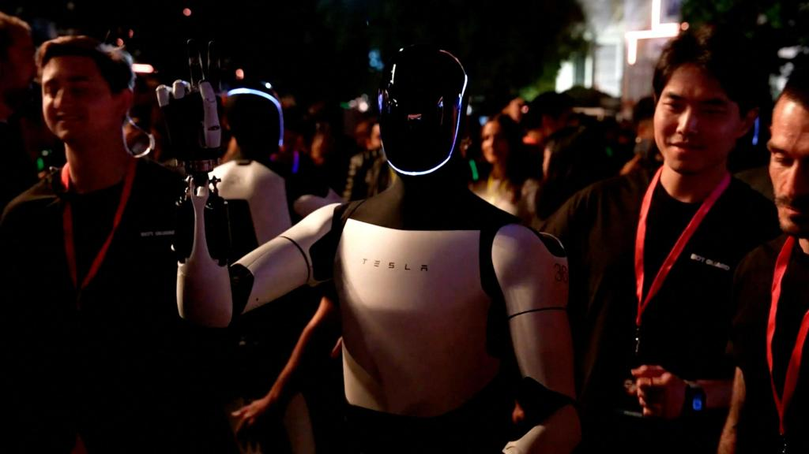

Um grupo de robôs Optimus surpreende no evento Tesla: humanóides dançando e servindo bebidas ao
público
Robôs humanóides andando e dançando entre o público, carros autônomos dirigindo sem motorista
pelas ruas de um estúdio de cinema e Elon Musk aparecendo ao lado de um astronauta, o evento
Tesla desta manhã é difícil de descrever. Nós, Robot, deixamos imagens para a posteridade,
principalmente as de um grupo de Optimus demonstrando as suas capacidades motoras como nunca
antes vistas ao vivo.
A Tesla mostrou o seu futuro, que é mais complexo do que os veículos eléctricos que vende em
países como Espanha. A empresa pretende desenhar um mundo mais tecnológico com robôs a servir os
humanos nas suas casas, tal como a Optimus tem servido até certo ponto os participantes em
eventos.
Ler mais
iPhone 16 em baixa: Apple teria reduzido produção dos smartphones
A Apple teria reduzido o ritmo de produção do iPhone 16 por conta da demanda abaixo do esperado
pelos dispositivos. A informação foi sugerida por analistas da Barclays, com base em detalhes
obtidos nas linhas de montagem.
Os analistas estimam que a produção do iPhone 16 ficaria 15% menor em comparação com o visto no
ano passado, e cortes teriam sido realizados em fornecedores importantes de semicondutores da
Apple.
Ler mais
Alexandre de Moraes autoriza que X (Twitter) volte a funcionar no Brasil; veja
Fora do ar há mais de um mês, o X (Twitter) já pode voltar a funcionar no Brasil, após
autorização do ministro do Supremo Tribunal Federal (STF), Alexandre de Moraes, nesta
terça-feira (08). O desbloqueio acontece após a rede social pertencente a Elon Musk cumprir
todas as demandas judiciais.
A decisão de Moraes seguiu recomendação do procurador-geral, Paulo Gonet, que se manifestou
favorável ao fim da restrição. De acordo com o chefe da Procuradoria-Geral da República (PGR),
não havia mais motivos para manter a suspensão da plataforma com a confirmação do pagamento das
multas devidas pelo X.
Ler mais